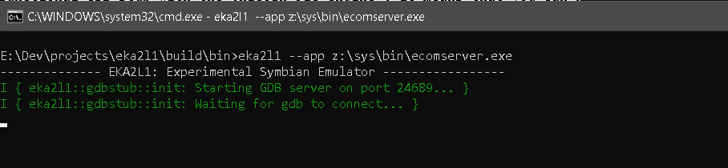
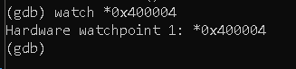
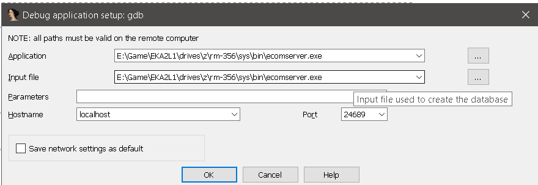
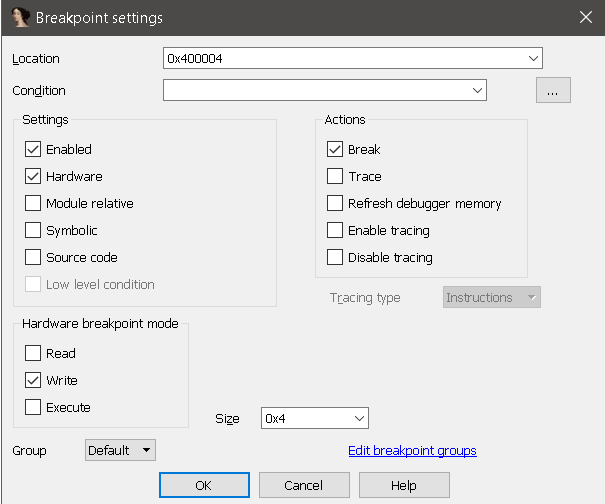
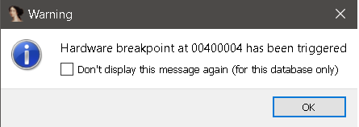
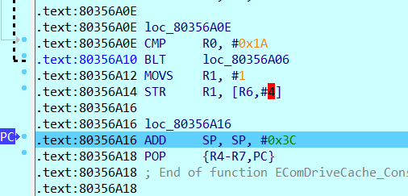

Debugging with GDB and IDA¶
EKA2L1 has a functional GDB stub with the Unicorn JIT engine. It means that you can hook up and debugging the whole EPOC system with GDB, and also with IDA. Because of performance reason, this is not included in the Dynarmic JIT engine yet.
Here is list of supported features:
Software breakpoints: Record a list of address that will pause the emulated system once the program counter of the CPU hit one of the address in the list. Use the b/break command in GDB and specify the execute breakpoint address.
- Hardware breakpoints: This includes read/write and access breakpoints.
Read breakpoint (see rwatch command), is a kind of breakpoint that hit when there is an instruction that read memory at specified address.
Write breakpoint (see watch command), works pretty much the same as read one, except, yes, it hits when memory are writed at specified address.
Access breakpoint is read and write breakpoint fuses toghether.
Segmentation faults are reported as well. Be careful.
Get ready
If you want to use raw GDB, please make sure that your GDB version support ARM guest. You can download the ARM toolchain from ARM website, it contains what you need on Windows, or just use gdb-multiarch in case you are on Unix-based system.
It’s not possible to run gdb with a EPOC image yet. You must run gdb with no comment and connect it with EKA2L1.
First, make sure that in config.yml, option enable-gdb-stub is set to true:

Then, launch the emulator with program you wish to debug, or the program that spawns another program or loads an DLL you wish to debug. In this example, I’m gonna launch the ecomserver.exe (“z:\sys\bin\ecomserver.exe”)
You can change the port in option gdb-port inside config.yml. The emulator should now wait for a connection…. from somewhere!
Use with GDB
First, launch the GDB instance with ARM support :D, and connect it with the remote using target remote localhost:<gdb_port>.

The default port number is 24689, and if you set it yourself but forgot, EKA2L1 will remind it. Look at the log again.
From now feel free to use GDB commands. For example, let’s set a hardware breakpoint! At 0x400004. Normally, Symbian BSS is hardcoded for ROM image. For ROM process image, the BSS always reside at the base, while for DLL, the ROM builder allocated section staticly at a memory region, specifically dedicated to ROM DLL static data.
This memory region is sadly not available on EKA1, which maybe is why they tell you that global data in DLL were not supported in Symbian version 6 or lower (EKA1), because it’s unfair for ROM DLL?
EComServer executable uses some global memory, and have the base BSS address at 0x400000. At DWORD 0x400004, it is a boolean, for what purpose we don’t care. So let’s use it as our dummy test.
We set a write watch here, any write operation to this address will temporary halt the emulator. Let’s use c command to continue!

Woohoo! The breakpoint is hit. The new value is 1, so somewhere it must set this boolean to true. Feel free to go on from now, but if you really want to know where it’s set, IDA would help.
Use with IDA
We use ecomserver.exe for this example again.
Launch IDA, choose remote GDB backend for debug, and setup the process options like this:
The input and application fields should be leave by default. The port field should contains the GDB port displayed on EKA2L1 log screen. You can change it in config.yml.
Now let’s try to add a hardware breakpoint like on the GDB example. Write breakpoint at address 0x400004. Go to Debugger/Breakpoint/Breakpoint list and insert a new breakpoint.
Our breakpoint is memory breakpoint, so it should be a hardware one and the mode is “write”.
Now launch EKA2L1 with that program as parameter, and launch the IDA debugger now :). Try to continue all the way, and…
The breakpoint is hit! If you click OK, the PC will points to the instruction after the one that does the write.
It’s recommend for you to try it yourself more. I do have notes before ending this.
Note: With relocatable image like E32 image, the remote debugger won’t rebase the disassembly itself. That means you have to manually relocate the program in the disassembler. For process image, EKA2L1 mentions the base address in the log when spawning new process. I will make it easier in the future to do this.